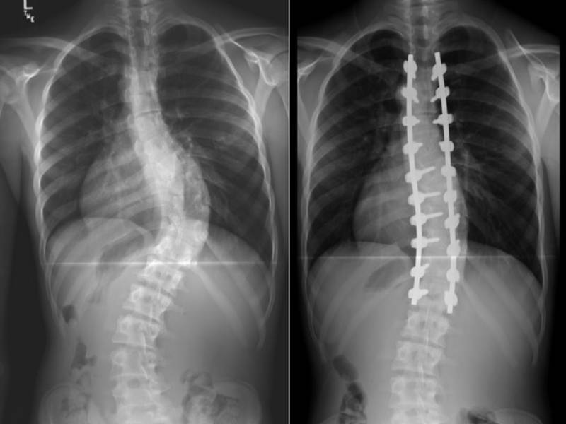
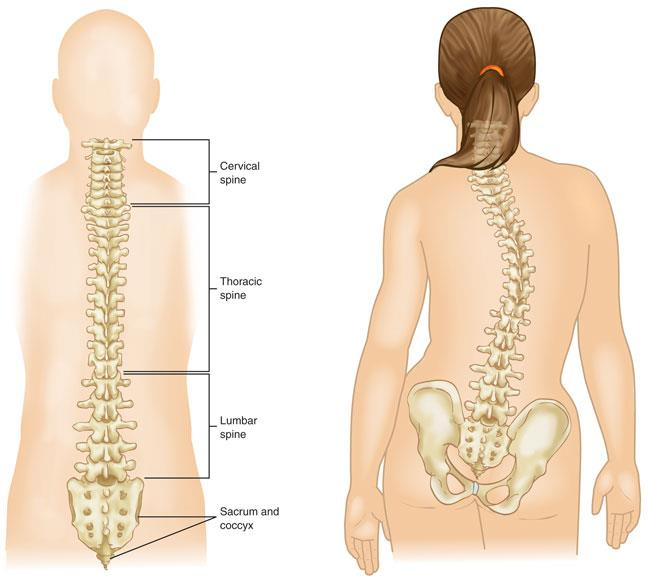
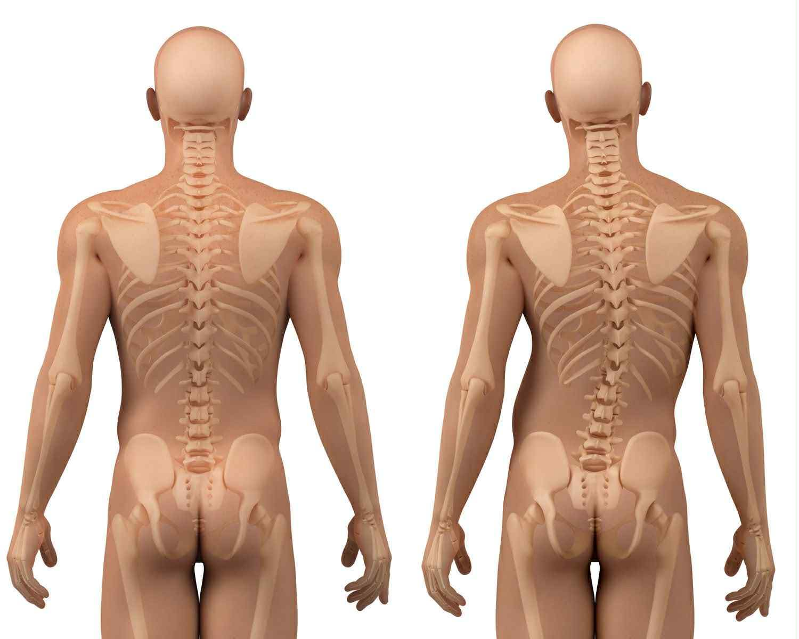
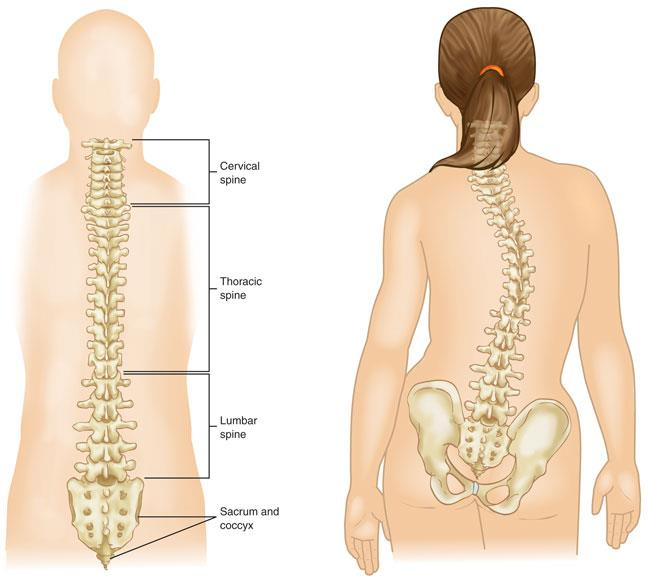
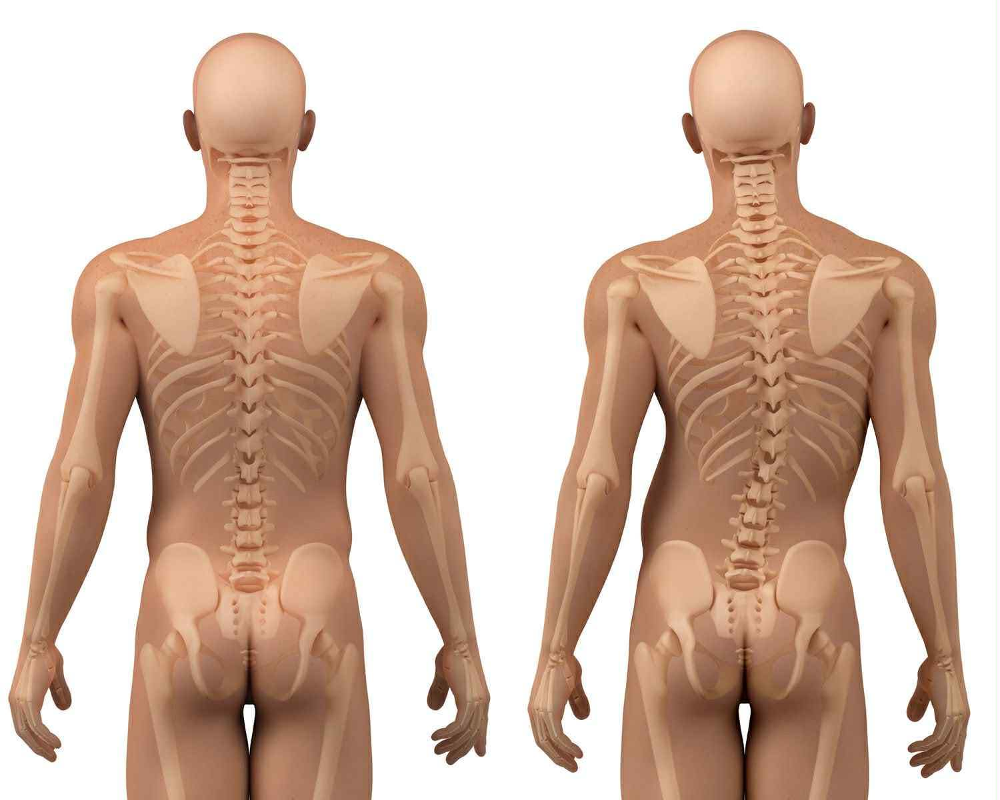

What are the 4 different types of scoliosis?
Idiopathic Scoliosis
• Idiopathic scoliosis is the most common form, and its exact cause remains unknown.
It is often discovered during childhood or adolescence when rapid growth makes the spine more vulnerable to
curving.
Because the cause isn’t clear, monitoring is essential to determine whether the curve becomes more
pronounced over time.
It often develops silently and may not cause pain or obvious symptoms at first.
• Doctors classify idiopathic scoliosis based on age:
infantile (before age 3), juvenile (ages 4–10), adolescent (11–18), and adult idiopathic (after skeletal
maturity).
Among these, adolescent idiopathic scoliosis is the most common.
Each subtype behaves differently, with adolescent curves having higher chances of progression.
Early detection allows doctors to intervene before the condition becomes severe.
Types of Idiopathic Scoliosis by Age of Onset
Healthcare providers classify idiopathic scoliosis based on the age at which it is diagnosed:
Infantile Scoliosis: Diagnosed before age 3.
Juvenile Scoliosis: Diagnosed between ages 4 and 10.
Adolescent Scoliosis: Diagnosed between ages 11 and 18.
Adult Idiopathic Scoliosis: Diagnosed after age 18, once skeletal growth is complete.
Congenital Scoliosis
• Present at birth and caused by abnormal development of the vertebrae during fetal growth.
Neuromuscular Scoliosis
• Caused by conditions affecting the nerves or muscles that support the spine. Often associated with
disorders such as cerebral palsy, muscular dystrophy, spina bifida, or spinal injuries.
Degenerative Scoliosis
• Develops in adulthood due to age-related spinal changes, including disc degeneration, weakened joints, or
decreased bone density. It may also result from mild scoliosis that progresses over time.
Congenital Scoliosis
• Present at birth and caused by abnormal development of the vertebrae during fetal growth.
Neuromuscular Scoliosis
• Caused by conditions affecting the nerves or muscles that support the spine. Often associated with
disorders such as cerebral palsy, muscular dystrophy, spina bifida, or spinal injuries.
Degenerative Scoliosis
• Develops in adulthood due to age-related spinal changes, including disc degeneration, weakened joints, or
decreased bone density. It may also result from mild scoliosis that progresses over time.
Neuromuscular Scoliosis
• Neuromuscular scoliosis occurs when conditions affecting the nerves or muscles weaken the spine’s support.
Disorders such as cerebral palsy, muscular dystrophy, spina bifida, or spinal cord injuries can affect
muscle tone and balance, leading to curvature.
Since the muscles cannot hold the spine upright, the curve often progresses faster than idiopathic
scoliosis.
• Patients with neuromuscular scoliosis may require a combination of treatment methods, such as bracing,
physical therapy, or surgery.
Because the underlying condition affects movement and posture, treatment focuses not only on correcting the
curve but also on improving comfort, sitting balance, and quality of life.
Degenerative Scoliosis
• Degenerative scoliosis appears in adulthood due to age-related changes in the spine.
Over time, the discs shrink, the joints wear out, and the vertebrae weaken, causing the spine to lean or
rotate.
This type can also develop from earlier mild scoliosis that worsens with age.
Adults often experience symptoms such as back pain, stiffness, and nerve-related issues.
• Treatment for degenerative scoliosis typically includes physical therapy, medications, and sometimes surgery
if the curve compresses nerves or affects mobility.
Since bone and joint degeneration continues with age, long-term management focuses on pain reduction and
improving daily functioning.
What Causes Scoliosis?
The cause of scoliosis varies depending on the type.
Idiopathic scoliosis has no known cause, though studies suggest hereditary factors and genetics may contribute.
Most cases occur during adolescence, and the spine begins to curve without an identifiable trigger.
Other types are linked to congenital malformations, where the spine develops abnormally before birth.
These malformations include fused vertebrae, incomplete formation, or vertebral misalignment.
Because the abnormalities appear early, the curve often progresses rapidly during childhood.
Neuromuscular diseases such as cerebral palsy, muscular dystrophy, or spinal cord injuries can also cause
scoliosis.
Weak or imbalanced muscles fail to support the spine, leading to curvature.
In adults, scoliosis can result from natural aging, disc degeneration, osteoporosis, or previous spinal
injuries.
Who Is Most at Risk of Developing Scoliosis?
Children and teenagers, especially those going through growth spurts, have the highest risk of developing
scoliosis.
The rapid growth of bones during adolescence can cause curves to form or progress quickly.
Girls have a higher likelihood than boys of developing curves that require treatment.
Family history also increases the risk.
If a parent or sibling has scoliosis, other children in the family may also develop the condition.
Although the condition is not fully hereditary, genetic tendencies play a major role in who develops it.
Neuromuscular conditions, birth defects, and aging are additional risk factors.
Disorders affecting muscle strength and coordination weaken the spine’s stability.
In adults, age-related degeneration and disc collapse can cause scoliosis or worsen existing mild curves.
What Are the Common Signs and Symptoms of Scoliosis?

One of the most noticeable early signs of scoliosis is uneven shoulders.
A person may have one shoulder that sits higher than the other, or one shoulder blade that sticks out more
prominently.
This asymmetry often becomes easier to see when wearing fitted clothing or during routine posture checks.
Another common indicator is uneven hips.
One hip may appear higher, more pronounced, or shifted to one side, which can cause the person to lean or look
unbalanced.
This unevenness can also affect walking patterns, making movements seem uneven or awkward.
A visible sign often checked by doctors is when one side of the rib cage protrudes during the forward-bending
test .
This occurs because scoliosis can twist the spine, causing the ribs to shift and create a hump-like appearance.
This test is a quick and reliable way for healthcare providers to spot potential spinal curvature.
Some individuals may also experience back pain, though this is more common in adults.
Younger people, especially teens, usually feel little to no pain, but muscle imbalance around the curved spine
can still create mild discomfort.
In adults, chronic pain can develop due to nerve compression or age-related spinal changes.
As scoliosis becomes more severe, postural changes become more obvious.
A person may lean to one side, have clothes that hang unevenly, or appear generally misaligned.
In more advanced cases, the spinal curve can reduce space in the chest, which may affect breathing and overall
physical endurance.
How Is Scoliosis Diagnosed?
Doctors diagnose scoliosis through examining posture, shoulder and hip alignment, and spinal movement.
During the Adam’s Forward Bend Test, the doctor looks for rib or back unevenness as the patient bends forward.
This test helps detect spinal rotation.
If scoliosis is suspected, imaging tests such as X-rays, MRI, or CT scans are used to view the spine’s shape and
measure the curve.
These tests show the exact angle and location of the curvature, helping doctors decide the best treatment plan.
also consider medical history, growth patterns, and any symptoms such as back pain or uneven posture.
This information helps determine whether the scoliosis is congenital, idiopathic, or caused by other conditions.
In some cases, doctors may refer the patient to specialists such as orthopedic surgeons or physical therapists
for further assessment.
This ensures that the diagnosis is accurate and that the patient receives a treatment plan suited to their age,
health, and severity of the curve.
How Do Doctors Measure the Severity of Scoliosis?
Severity is measured using the Cobb angle, which evaluates how far the spine deviates from normal alignment.
A mild curve measures less than 20 degrees and typically requires monitoring. Moderate curves range from 20–40
degrees and may need bracing.
Severe curves over 40 degrees may require surgery. Doctors track the Cobb angle over time to monitor progression
and adjust treatment.
This measurement helps determine whether the condition is stable or worsening.
Doctors also observe the patient’s growth stage, since younger individuals who are still growing have a higher
chance of curve progression.
Tools like the Risser sign help determine how much growing is left and how closely the curve needs to be
monitored.
In addition to the Cobb angle, specialists may assess symptoms such as pain, breathing difficulty, or visible
posture changes.
These factors help doctors understand how the curve affects daily function and whether more aggressive treatment
may be necessary.
What Are the Possible Treatments for Scoliosis?
Observation
Observation is recommended for mild scoliosis where curves are small and not progressing quickly.
Doctors schedule regular check-ups and X-rays to track changes. This approach works well for children who are
still growing
This method also helps doctors identify early signs of progression so they can intervene before the curve
becomes more serious.
Parents and patients are encouraged to follow scheduled visits consistently, since missing check-ups can delay
needed treatment.
Observation is a low-stress option that allows the child to continue normal activities while being monitored for
changes.
Bracing
Bracing is used to prevent curves from getting worse during growth periods.
It does not straighten the spine but helps control progression. Successful bracing depends on wearing the brace
consistently.
Most braces are custom-made to fit the patient’s body, making them more comfortable and effective.
Wearing the brace for the recommended number of hours per day greatly improves outcomes.
adjusting to a brace can be challenging at first, many patients adapt well and can continue with school and
physical activities with proper guidance.
Physical Therapy
Physical therapy strengthens the spine and improves posture.
Exercises help maintain flexibility and reduce discomfort.
It is often used with other treatments for best results.
Therapists may use scoliosis-specific exercise programs designed to improve muscle balance and support proper
spinal alignment.
sessions can enhance core strength and reduce tension in surrounding muscles. Over time, physical therapy helps
patients feel more confident in movement and can lessen the impact of scoliosis on daily activities.
Surgery
Surgery is recommended for severe curves that affect breathing, posture, or daily activities.
Spinal fusion is the most common procedure to straighten and stabilize the spine.
It is usually considered only after other treatments fail.
Surgical treatment aims to prevent further curvature and improve overall function and comfort.
Recovery includes follow-up visits, rehabilitation exercises, and careful monitoring to ensure the spine heals
properly.
Although surgery can be a major step, many patients experience significant improvement in alignment and quality
of life afterward.
How Does Scoliosis Affect Daily Life?
Scoliosis can impact daily life by causing discomfort, limited movement, and posture issues.
People with moderate or severe curves may experience difficulty standing or sitting for long periods.
Some also feel self-conscious about their appearance due to uneven posture.
Activities such as sports, lifting, or bending may require adjustments to avoid pain.
Despite these challenges, many people adapt and continue living full, active lives with proper care and support.
The emotional impact of scoliosis can also be significant, especially among teenagers who may feel insecure
about wearing a brace or having a visible curve.
Encouragement from family, teachers, and peers helps them stay confident throughout treatment.
With the right medical management and coping strategies, people with scoliosis can perform daily tasks,
participate in hobbies, and maintain a healthy lifestyle.
Education about the condition also empowers them to make choices that protect their spine and avoid unnecessary
strain.
What Are Helpful Lifestyle Practices for People with Scoliosis?
Regular Exercise:
Engaging in consistent physical activity is one of the most beneficial practices for individuals with scoliosis.
Exercises that focus on strengthening the core and back muscles help stabilize the spine, improve posture, and
reduce the risk of further curvature progression.
Activities such as swimming, yoga, and Pilates are particularly effective because they promote flexibility and
balance while minimizing strain on the spine.
These exercises also encourage better body awareness, which can help individuals correct poor posture habits in
daily life.
Beyond strengthening, exercise also plays a vital role in pain management and overall well-being.
Gentle stretching routines can relieve muscle tightness, while low-impact aerobic activities like walking or
cycling improve circulation and endurance.
Regular movement not only supports spinal health but also boosts confidence and mental resilience, helping
people with scoliosis feel more in control of their condition.
Healthy Weight Management:
Maintaining a healthy weight is essential for reducing unnecessary stress on the spine. Excess weight can
increase pressure on the vertebrae and surrounding muscles,
leading to discomfort and a higher risk of pain. By adopting balanced eating habits such as consuming
nutrient-rich foods, staying hydrated, and limiting processed items,
individuals can better support their musculoskeletal system and overall health.
Weight management also contributes to improved mobility and energy levels. When the body is at a healthy weight,
it becomes easier to engage in physical activities that strengthen the spine and maintain flexibility.
This creates a positive cycle: exercise helps regulate weight, while proper nutrition ensures the body has the
fuel it needs to stay active. Together, these practices reduce the likelihood of scoliosis-related complications
and promote long-term spinal wellness.
Ergonomic Support:
Creating an ergonomic environment is another key lifestyle practice for managing scoliosis.
Using supportive chairs with proper lumbar cushioning can help maintain the natural curve of the spine and
reduce strain during prolonged sitting.
Adjusting desk height, computer screens, and even sleeping positions ensures that the spine is aligned
correctly, preventing unnecessary stress on the back and neck.
Equally important is cultivating mindful posture habits throughout the day. Whether standing, sitting, or
lifting objects, maintaining proper alignment helps minimize discomfort and prevents further spinal imbalance.
Ergonomic support is not just about furniture, it is about building awareness of how the body moves and rests.
By combining supportive tools with conscious posture practices, individuals with scoliosis can significantly
improve comfort and reduce the risk of chronic pain.
Can Scoliosis Be Prevented?
Most cases of scoliosis, especially idiopathic scoliosis, cannot be prevented.
Since the cause is unknown, there is no guaranteed way to stop it from developing.
However, early detection can help prevent curves from worsening.
Maintaining healthy habits such as exercise and posture awareness can support spine health.
Additional sources like Mayo Clinic and the Scoliosis Research
Society explain that scoliosis cannot be cured but can be managed effectively with early treatment, bracing, or
surgery when needed.
Main Details
Early detection allows doctors to apply treatments like bracing, exercise, or monitoring before the curve
progresses.
This prevents complications and reduces the likelihood of needing surgery.
Healthy practices such as regular stretching, strengthening exercises,
and staying active help improve comfort and mobility for those with scoliosis.
These habits do not prevent scoliosis but promote a healthier spine.
School screenings and routine check-ups help identify scoliosis early.
Parents, teachers, and healthcare providers can spot signs like uneven shoulders or posture changes to ensure
timely evaluation.
Regarding Surgery:
Surgery does not prevent scoliosis, but it can correct or stabilize severe curves.
Sources like the AANS, SRS (Scoliosis Research Society),
and Spine-Health confirm that surgical treatment is typically recommended for curves that are severe,
rapidly progressing, or causing pain and functional problems. Surgery can straighten the spine and prevent
further worsening,
but it doesn’t “cure” scoliosis in the sense of preventing it from ever occurring—especially in children with
idiopathic scoliosis.
How Common Is Scoliosis?
Scoliosis affects 2–3% of the population. Many cases are mild and go unnoticed for years, especially in children
who do not experience pain.
Because it develops gradually, some people do not realize they have it until symptoms become visible.
More severe cases are less common but require treatment to prevent complications. Adolescents, especially girls,
have higher rates of progressive scoliosis.
Early detection helps identify the condition before it becomes severe.
For many families, scoliosis is not something they expect to deal with, so when a diagnosis happens, it can feel
overwhelming.
But the truth is, most people with scoliosis live completely normal, active lives. With proper monitoring and
timely care, the condition often remains manageable and does not interfere with daily activities.
It is also important to remember that scoliosis looks different for everyone.
Some children may only need occasional checkups, while others might need bracing or therapy to guide the spine
as it grows.
Every spine has its own story, and understanding your unique situation is the first step toward feeling more in
control.
Medical professionals continue to emphasize the value of routine screenings, especially during growth spurts.
A simple check by a doctor or school nurse can catch changes early, long before they begin to affect posture,
comfort, or confidence.
These small steps make a big difference in long-term outcomes.
Many communities today are becoming more aware of scoliosis because of education campaigns and advocacy groups.
This growing awareness helps reduce fear and stigma, encouraging people to seek help sooner.
The more informed we are, the easier it becomes to support those living with scoliosis and to promote a culture
of understanding and early intervention.
Why Is Early Detection Important?
Early detection of scoliosis is crucial because it allows doctors to intervene before the spinal curve worsens.
Since curves can progress quickly during growth spurts, identifying them at an early stage helps prevent severe
deformities.
Timely medical attention may also reduce the likelihood of needing surgery later on.
School screenings play an important role in spotting early warning signs such as uneven shoulders or rib
prominence.
These programs help identify children who may not be aware of their spinal changes.
Parents also contribute by observing posture and movement at home to catch potential symptoms early.
Regular medical check-ups allow healthcare providers to assess spinal alignment and monitor any changes over
time.
When scoliosis is suspected, imaging tests like X-rays confirm the condition and determine its severity.
Early evaluation leads to more effective and targeted treatment.
Awareness and proper education encourage individuals to seek medical attention sooner.
When families understand the signs and symptoms, they are more likely to respond quickly and confidently.
This proactive approach helps improve long-term comfort and overall health outcomes.
Detecting scoliosis early also reduces emotional and psychological stress for children.
Those who receive appropriate treatment early on feel more supported, reassured, and confident in managing their
condition.
With proper guidance, they can stay active, healthy, and emotionally resilient.
Citations
AANS. (2024, April 30). Scoliosis. AANS. https://www.aans.org/patients/conditions-treatments/scoliosis/
admin. (n.d.). Dextroscoliosis | Scoliosis type | Curves Spine to the right & can be Painful. Scoliosis.
https://scoliosisinstitute.com/dextroscoliosis-of-the-spine/
British Scoliosis Society - Scoliosis Overview. (n.d.). Britscoliosis.org.uk.
https://britscoliosis.org.uk/Scoliosis-Overview
Cleveland Clinic. (2024, January 26). What Is Scoliosis? Cleveland Clinic.
https://my.clevelandclinic.org/health/diseases/15837-scoliosis
Duncan, J. (2020). All About Degenerative Scoliosis. Spine-Health.
https://www.spine-health.com/conditions/scoliosis/degenerative-scoliosis
Harvard Health Publishing. (2019, April 8). Scoliosis - Harvard Health. Harvard Health; Harvard Health.
https://www.health.harvard.edu/a_to_z/scoliosis-a-to-z
Kathryn Whitbourne. (2017, January 25). What Is Scoliosis and What Causes It? WebMD; WebMD.
https://www.webmd.com/back-pain/causes-scoliosis
Levoscoliosis & Dextroscoliosis: Differences & Treatment. (2022, September 16). Cleveland Clinic.
https://my.clevelandclinic.org/health/diseases/24193-levoscoliosis--dextroscoliosis
Mayo Clinic. (2024, September 28). Scoliosis - Symptoms and causes. Mayo Clinic.
https://www.mayoclinic.org/diseases-conditions/scoliosis/symptoms-causes/syc-20350716
Philadelphia, T. C. H. of. (2014, February 23). Idiopathic Scoliosis. Www.chop.edu.
https://www.chop.edu/conditions-diseases/idiopathic-scoliosis
rladmin. (2016, June 21). Understanding Scoliosis: Causes, Diagnosis & Treatment. Brevard Health Alliance.
https://www.brevardhealth.org/blog/scoliosis-101/?gad_source=1&gad_campaignid=23033027162&gbraid=0AAAAAqe_kaKb-9zMKiTVP5YYHdWt_UAfi&gclid=CjwKCAiA_dDIBhB6EiwAvzc1cKqLz0h2AykbiMHp1Upxq0xoy3WVpi_GQbkDIorfxvlNX-Waytt46hoCYKcQAvD_BwE
Scoliosis | Department of Radiology. (2025). Uw.edu.
https://rad.uw.edu/online-musculoskeletal-radiology-book/scoliosis
Scoliosis | Scoliosis Research Society. (n.d.). Www.srs.org. https://www.srs.org/Patients/Conditions/Scoliosis


 


